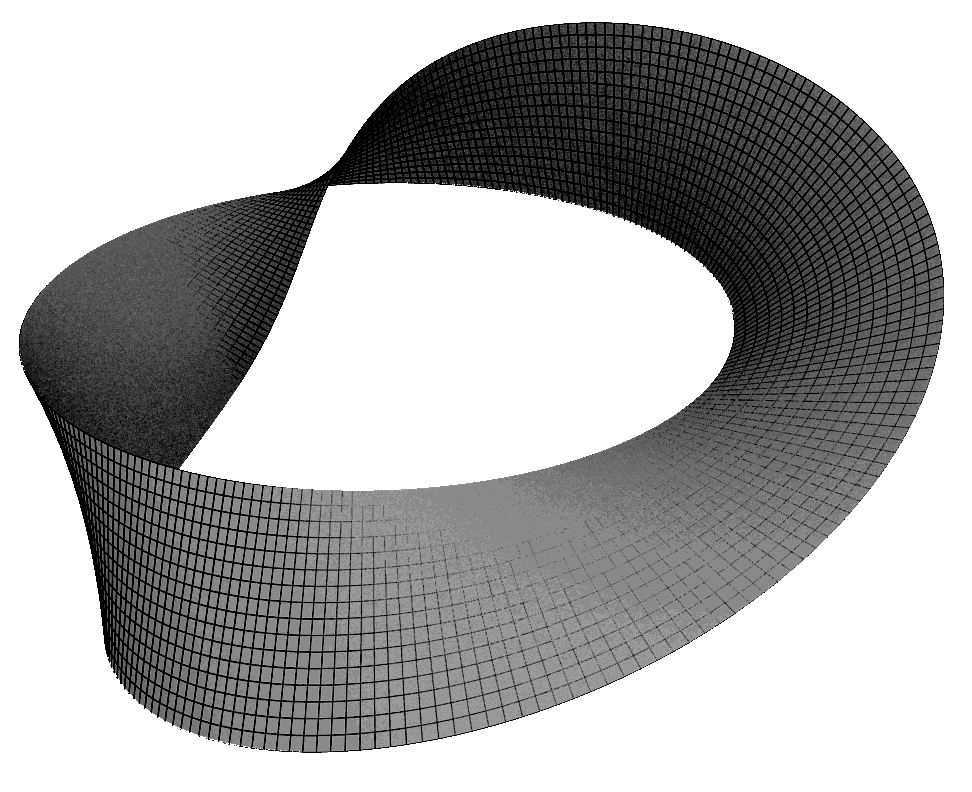
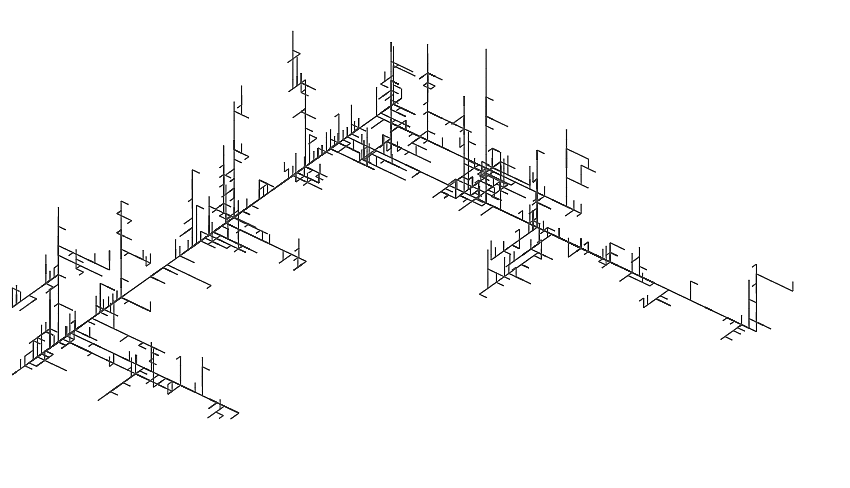
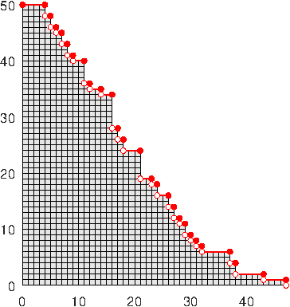
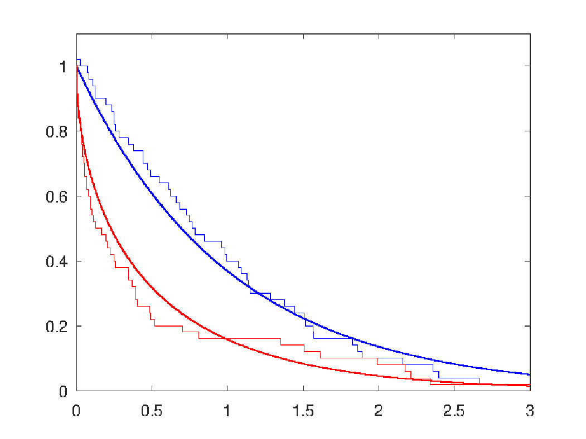

 
 
Teaching activities
2019-2022 : Tutorial assistant at the University of Leeds
2021-2022 : Math1025 Numbers systems, Math1515 Interest Rates and Cashflow Modelling
2020-2021 : Math1710 Probability and statistics, Math1005 Ordinary Differential Equations and Mechanics
2019-2022 : Math1060 Introduction to linear algebra